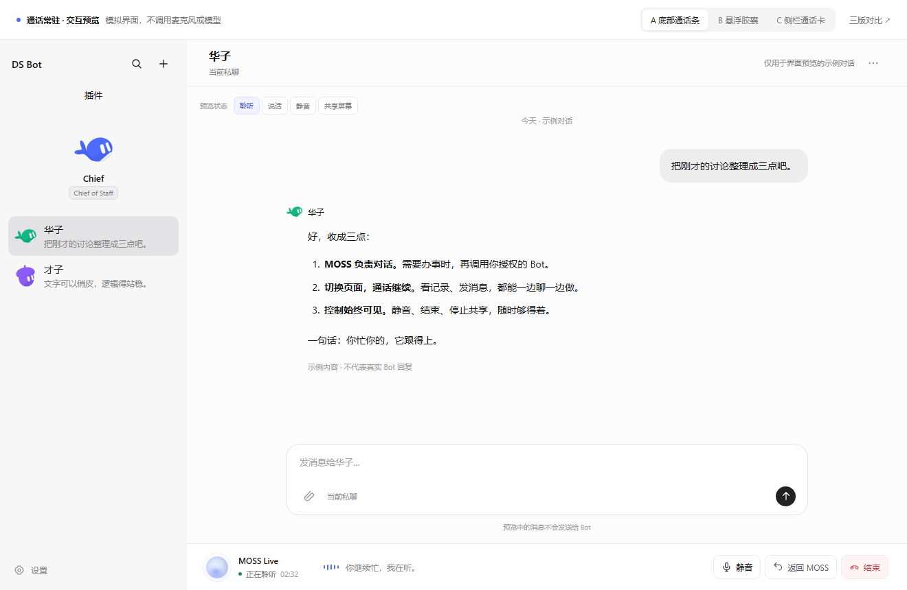
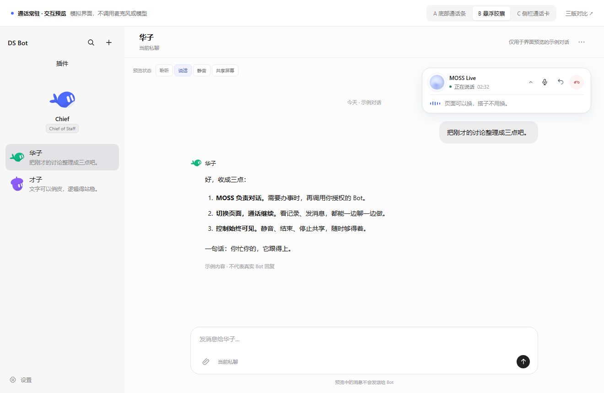
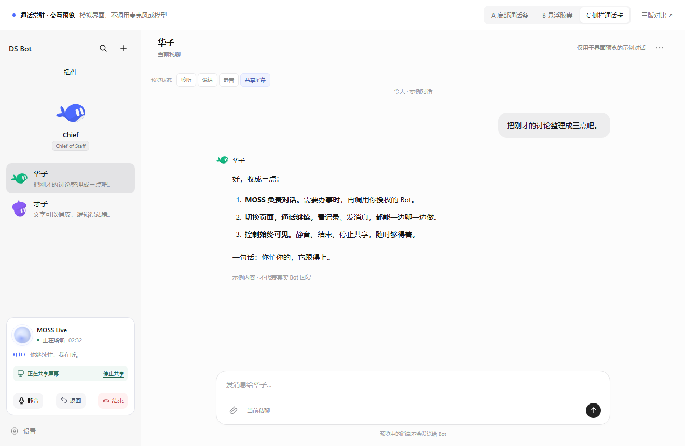

DS BOT / MOSS LIVE
换个页面，继续聊。
同一个语音会话，三种常驻控制方式。点开任意一版，直接试试。

A
底部通话条
推荐固定在输入框下方，状态和操作一眼看全。
不遮聊天，也不跟着内容滚走。

B
悬浮胶囊
收成一块轻巧的通话控制器。
可以收起字幕，减少视觉占用。

C
侧栏通话卡
留在 Bot 列表下方，聊天区更清爽。
窄窗口时移到底部，操作始终可见。
可以这样试
切到才子 → 静音 → 返回 MOSS 查看原字幕 → 切到共享屏幕状态 → 停止共享 → 结束通话。
预览不会访问真实对话、调用模型、开启麦克风或共享屏幕。这里只确认显示效果，正式程序的会话生命周期尚未修改。